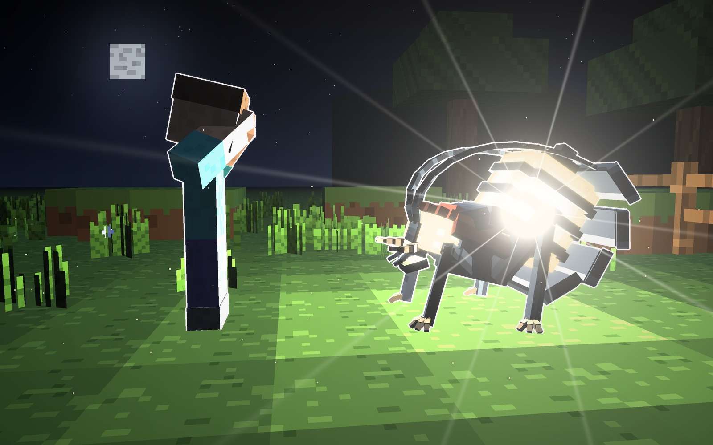
Atalaya · mob que hace algo · 16-10-2026
El Fogonazo
El mob que, si se te acerca, estalla como un creeper y te deja la pantalla en blanco. Es un
bicho-luciérnaga de la noche que lleva la luz dentro. Anda agazapado, con cara de luciérnaga: la cabeza
metida bajo el escudo, los ojos compuestos y las mandíbulas en hoz. Detrás, levantado sobre el lomo, lleva el
farol. Cuando te tiene cerca se abre: levanta las placas, se le encienden los ojos y estalla.
Lo que cambió desde la primera ficha, como pediste: la cara ahora es de luciérnaga (antes
era una cara de fauces, con los ojos cerrados). Estalla a 3 bloques, el blanco dura 4 segundos y el estallido es el de
un creeper: empuja, hace daño y ciega. Por ahora solo sale con su huevo. El cuerpo, el farol y los tres tipos siguen
igual.
La cara de luciérnaga
- El escudo: una placa ancha y redondeada, algo abombada, que le tapa la cabeza desde arriba. Es el pronoto
de las luciérnagas, con su borde de color (rojo teja en el Destello) y la mancha oscura en el centro.
- Los ojos compuestos: dos ojos grandes a los lados, negros como un cristal. La luz del farol los enciende
por abajo, y la mitad de arriba queda a la sombra del escudo, como un ceño.
- Las mandíbulas en hoz, de cuerno, que se cruzan delante. Entre ellas está la boca pequeña, encendida por
dentro, con dientes en aguja, y a los lados, los palpos.
- Las antenas en sierra: salen de debajo del escudo y se echan hacia atrás sobre el lomo.
Qué hace el Fogonazo
- Acecha de noche en el campo y en las cuevas. Su farol se ve de lejos: así sabes que anda cerca.
- Se te acerca corriendo, guiándose con las antenas.
- A 3 bloques se para y se abre: levanta las placas, abre los ojos y el farol se hincha y zumba. Tienes
1 segundo de aviso.
- Estalla como un creeper: te empuja, te hace daño y la pantalla se pone en blanco 4 segundos;
luego el blanco se va en 2. Él desaparece en el estallido.
Lo malo es lo que viene después: mientras no ves, los demás mobs te encuentran.
Cómo librarte: matarlo antes de que llegue (con arco, de lejos) o alejarte en el segundo de aviso.
Por ahora solo sale con su huevo. Ningún mob ni jefe sale todavía de forma natural.
Los tres son el mismo mob, en la misma pose de acecho. Cambia el farol y lo que hace al estallar.
Mide unos 2 bloques de largo y 1,4 de alto hasta el farol (1,7 con las antenas).
A · el Destello · el de siempre
El Destello: te ciega, lo mires o no
- Pizarra oscura y luz blanca. El farol va en bandas, con las placas detrás y la luz saliendo por las
juntas.
- Lo que hace: a 3 bloques, el segundo de aviso, y estalla como un creeper. Deja en blanco a todos los que
estén a menos de 6 bloques, lo estén mirando o no.
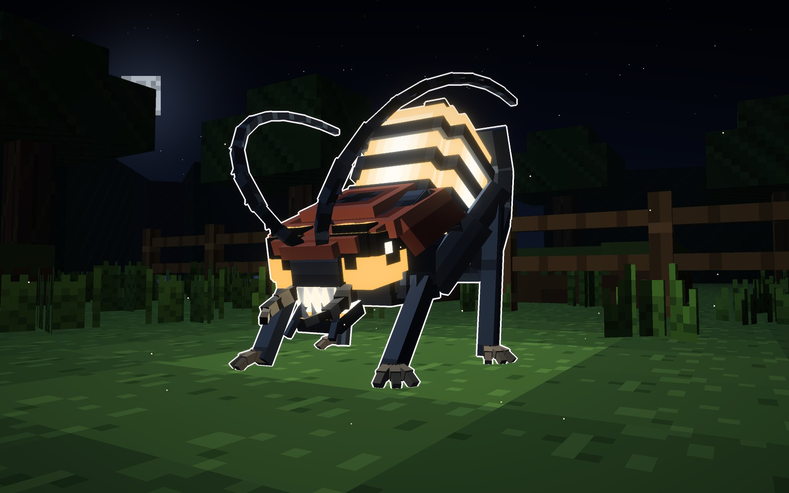
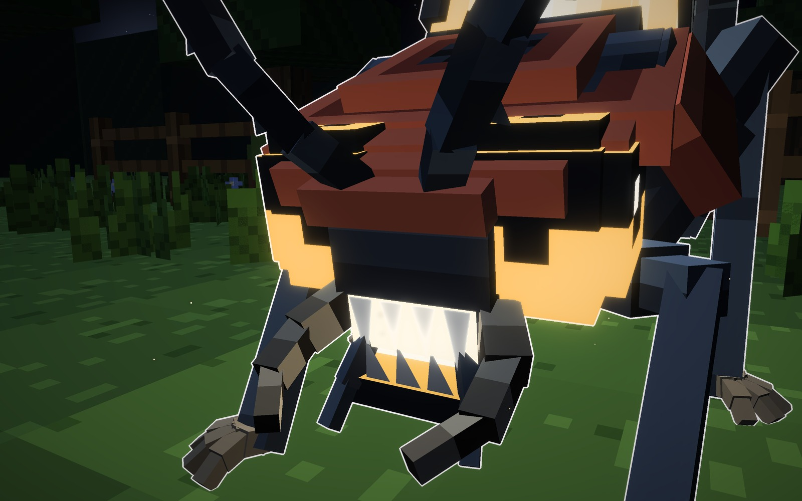
Su forma
- Piel
- pizarra oscura, escudo rojo teja
- Farol
- en bandas, con placas
- Luz
- blanca
Señas
- Estalla a 3 bloques.
- Ciega a todos los que estén cerca.
B · el Argos · el de los ojos
El Argos: solo te ciega si lo miras
- Pálido como los bichos de las cuevas. Su farol es un racimo de ojos cerrados: la luz solo sale
por las rajas de los párpados, y al estallar se abren todos a la vez. (Argos es el gigante de los cien ojos de la
leyenda griega.)
- Lo que hace: estalla igual que los otros (empuja y hace daño), pero solo deja en blanco a quien lo
está mirando. Si te das la vuelta en el segundo de aviso, te libras del blanco.
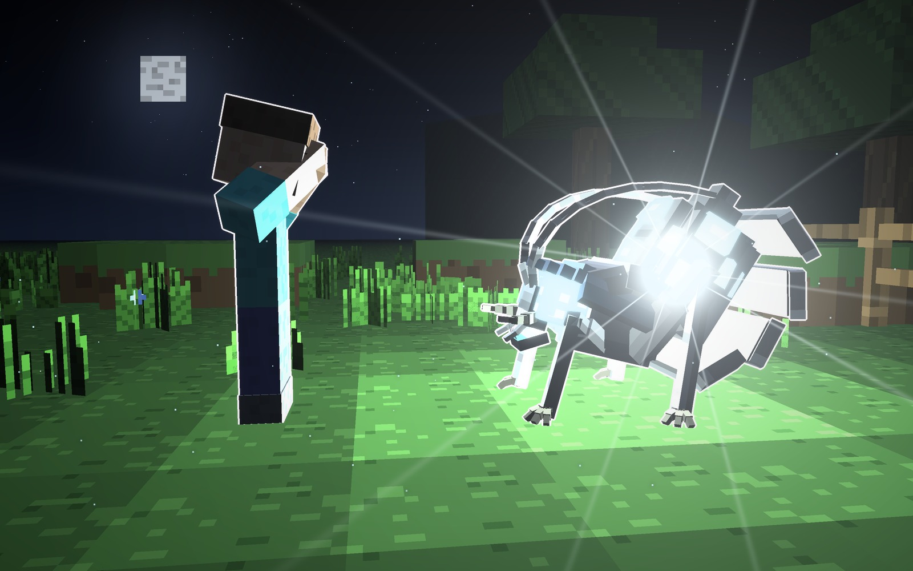
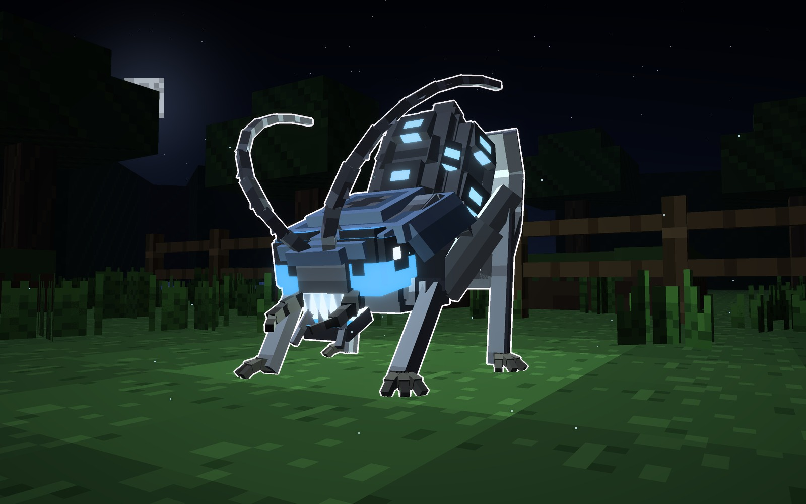
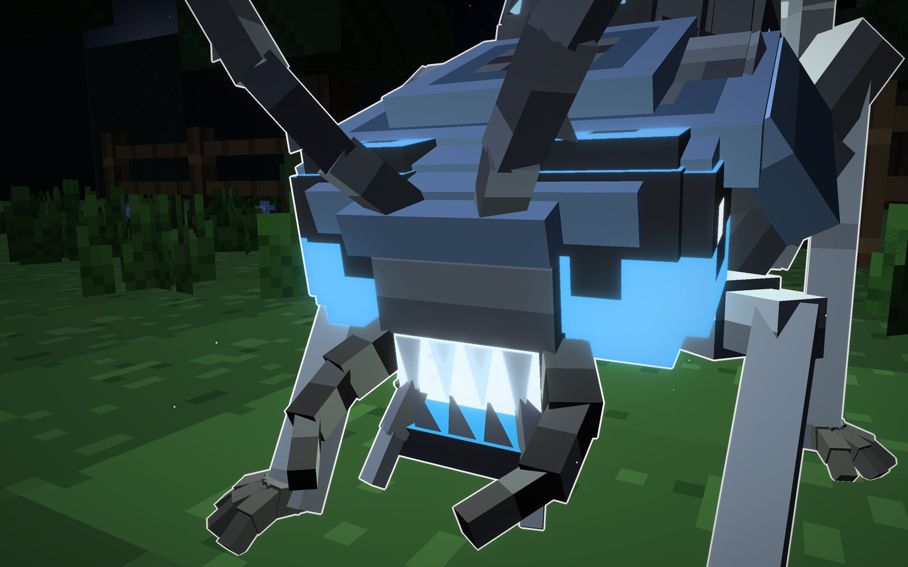
Su forma
- Piel
- pálida, de cueva
- Farol
- de ojos cerrados
- Luz
- blanca y fría
Señas
- Estalla a 3 bloques.
- Solo ciega si lo miras: date la vuelta.
C · el Racimo · el de las vainas
El Racimo: suelta vainas que revientan
- Pardo rojizo y luz de ámbar. En vez del farol lleva un racimo de vainas de luz, cada una con su
cáliz oscuro.
- Lo que hace: estalla como los otros y además suelta las vainas, que saltan alrededor y revientan una
tras otra durante 3 segundos. Cada una que revienta cerca te empuja un poco y te vuelve a dejar en blanco. Lo
mejor es no quedarse donde caen.
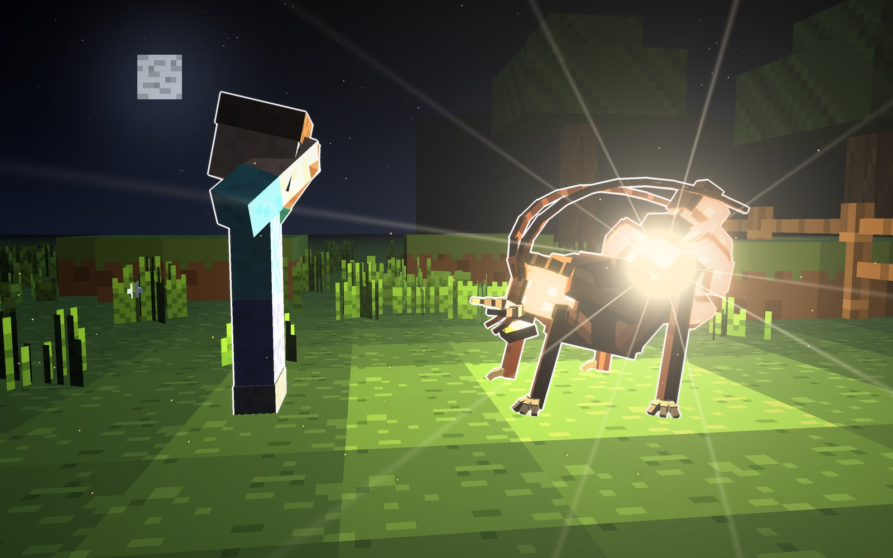
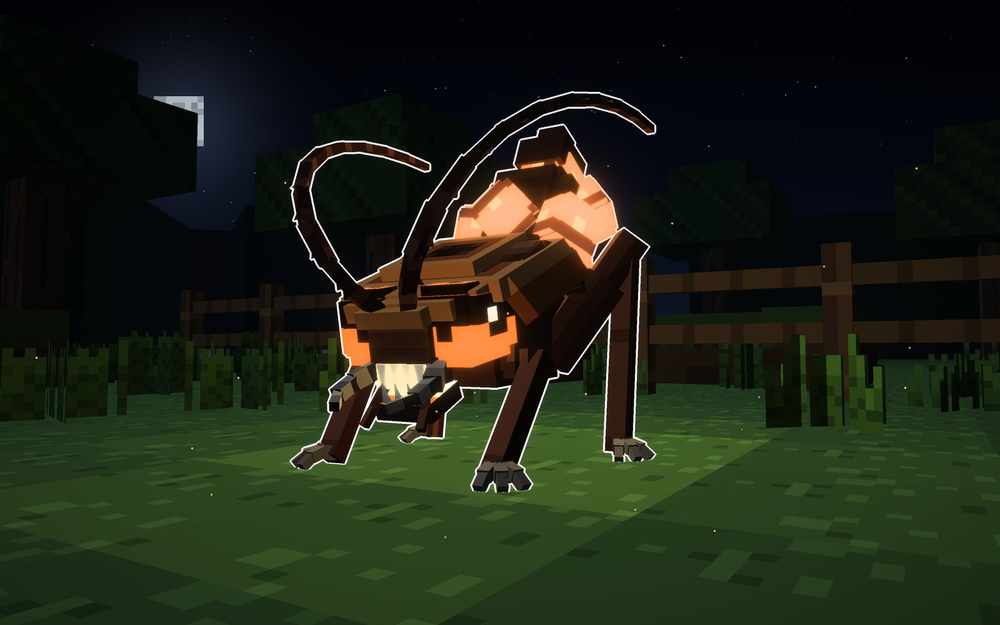
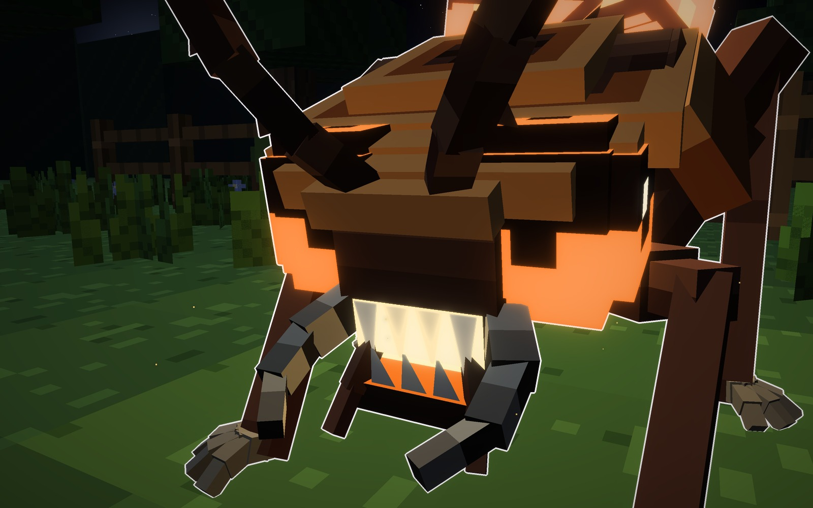
Su forma
- Piel
- pardo rojiza
- Farol
- un racimo de vainas
- Luz
- ámbar
Señas
- Estalla y suelta vainas.
- Ciega varias veces seguidas.
Lo que ve el jugador
Desde los ojos del jugador, con el Destello a 3 bloques.
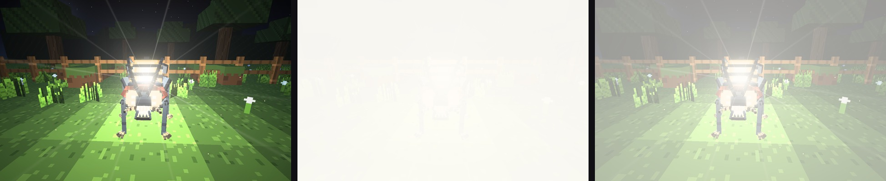
1 · se abreel segundo de aviso
2 · en blanco4 segundos
3 · se vaen 2 segundos
Los tres, con un jugador
En el campo, junto a un jugador (1,8 bloques): el Destello, el Argos y el Racimo.
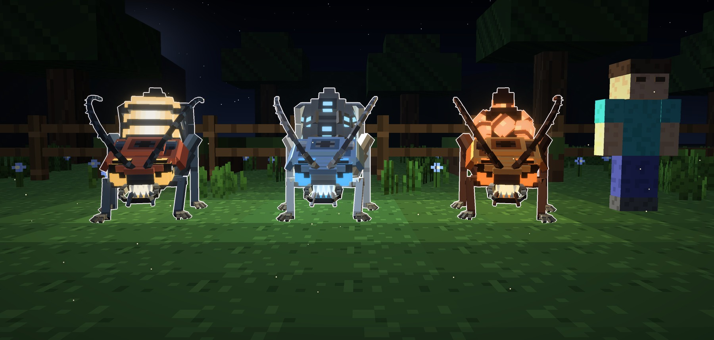
Los materiales
Una fila por tipo: el escudo de la cabeza, el ojo compuesto, la placa del lomo (con la raja de luz),
el farol (la luz en el Destello, el ojo cerrado en el Argos y la vaina en el Racimo), el paladar, la antena y el
diente.
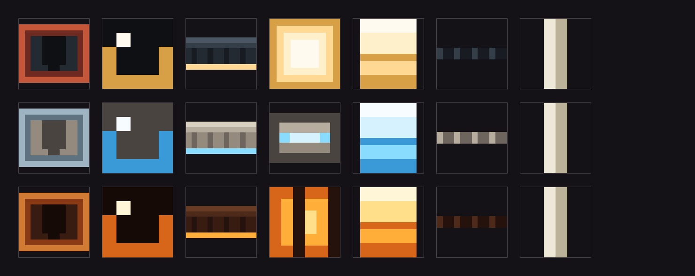
En el juego
El Destello ya está en el mod, con su huevo: de día y de noche, con el farol encendido.
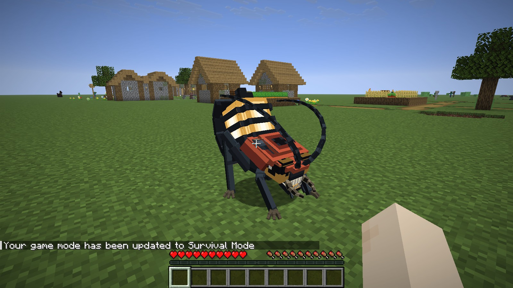
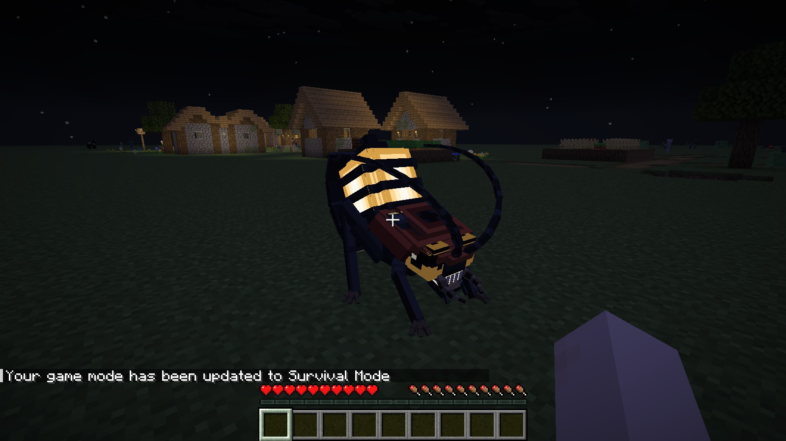
Veredicto de Juan
- 16-10-2026, primera ficha (la cara era de fauces, con los ojos cerrados): «cámbiale la cara por una más tipo
luciérnaga; que estalle a 3 bloques está bien; el blanco, 4 segundos, está bien; que al estallar sea como una
explosión de creeper: te va a empujar, cegar y hacer daño; que salga por ahora en huevo, ningún mob ni jefe va a
salir todavía de forma natural».
- Con la cara de luciérnaga, eligió el Destello: «este diseño va a ser, metámoslo en el juego». El Argos y
el Racimo se quedan en la ficha.
Bocetos: materiales/generadores/fogonazo_modelo.py y fogonazo_escenas.py, hechos desde cero. En el juego:
fogonazo_juego.py (la malla, la textura y el huevo) y fogonazo_sonidos.py.